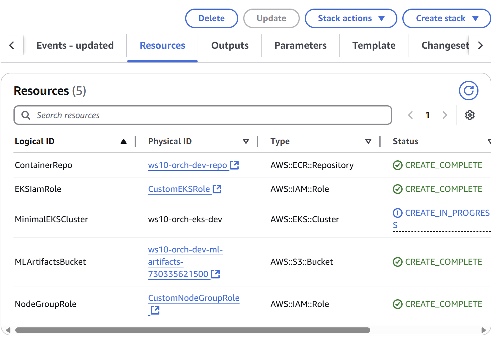

DE5 WS10: Orchestration - TASK 1#
⚙️ Task 1: Deploying and Configuring the Orchestration Environment#
Goal: Spin up the minimal cloud resources needed for your orchestration pipeline.
High-level Agenda
You’ll deploy a comprehensive AWS environment using CloudFormation that sets the stage for an ML pipeline.
We’ll then orchestrate a simple ML pipeline—pulling data from S3, training a decision tree model, and explore the results (predictions) of which employees are likely to leave the business.
Background Reading on Docker - Please do not skip!#
If you haven’t yet read “Task 0 - Intro”, remember to start with that one. Also remember to review the morning slides and ask your PDE if you have any questions.
In earlier parts of the programme, Docker fundamentals were not explicitly discussed, because you could do most of the tasks without containerisation. However, now that you’re moving towards complex data pipelines, Docker will become your daily staple. Docker is simply a framework for running containers. In Docker, you’ll be amazed and/or surprised to find out how simply you can run a single instance of your application with a command like docker run node.js. That’s powerful and speedy, but very quickly you may run into issues:
If your application load increases, you might try manually running
docker runmany times on the same machine, but that’s not scalable.If one container crashes, you have to notice it yourself and redeploy.
If the host itself fails, all containers on that machine become inaccessible.
Maintaining multiple containers, monitoring their performance, and deciding when to scale them up or down can be time-consuming and prone to human error. For small-scale demos, this might be fine. But for production use cases—like an HR ML scenario that might involve tens or hundreds of containers over time—you need an automated solution. This is where Kubernetes and Argo come to rescue.
Open Container Initiative (OCI)
If you’re curious about container standards, the Open Container Initiative is a collaborative project hosted by the Linux Foundation, aimed at creating open industry standards around container formats and runtimes. Post-workshop, we encourage you to look into OCI. It explains how Docker images and other container tools can interoperate, ensuring consistency across different runtimes and vendors. Why would you want to do this? Standards are a powerful concept in data engineering, ensuring that your software stays compatible even when it migrates across teams or organisations. OCI is an example of such a standard.
What you’ll do in Task 1:#
In Task 1, you will deploy:
An ECR repository to store your ML container
A simple S3 bucket for model inputs/outputs
An EKS cluster to run orchestrators (Airflow, Argo) and your HR container tasks.
The CloudFormation template from Workshop 10 was designed to remain minimal while referencing the same tagging approach and environment naming used in previous workshops to maintain continuity.
Deploying via CloudFormation#
Access the GitHub Repository
Assuming you have access to
https://github.com/Corndel/DE-workshop-10-PDENavigate to
CloudFormation_Orchestration.yml
Check Key Parameters - Important
EnvironmentName: Typically
dev,test, orprod. This is to get you used to the idea of tagging deployments with names that specify whether they are meant for development, testing or production use! Choose wisely…Subnets: we will need two subnets for deploying a Kubernetes cluster; if you are not familiar with the term subnetting, bookmark this resource for further reading: https://www.dnsstuff.com/subnet-ip-subnetting-guide
Subnets: warning: the quirk in AWS means that a Kubernetes control plane cannot be allowed to span across the availability zone
us-east-1e. In the search bar of your cloud environment, go to VPC and then click on Subnets (right-click and open this in a new tab/window not to navigate away from CloudFormation). Find the availability zoneus-east1-eand label the AZ associated with it with the name (tag)donotuseto make it easier to spot it later during the setup of our CloudFormation stack. Important: failing to do that, and later accidentally selecting an incorrect AZ, will cause your deployment to fail and will set you back 30-45 minutes!
Launch the Stack
Go to CloudFormation in the AWS Console → Create stack → With new resources (standard).
Provide the template file (either upload directly or point to your GitHub raw URL/S3 URL).
Click on Next, provide Stack Name that you’ll remember (“hr-ml-stack”)
On the Parameters page, fill in
ProjectName=ws10-orch,EnvironmentName=dev,EksVersion=1.27.Pay attention to providing two subnets in two different AZs. Do not select the AZ you have just marked as
donotuseAcknowledge IAM resources if prompted.
Click Create stack.
The deployment will take around 15 minutes so the PDE will cover a number of slides with you during this waiting time.
Monitor Deployment
Wait for the status to change to CREATE_COMPLETE.
Go to the Outputs tab to retrieve the S3 bucket name, ECR repo URI, and EKS cluster name.
Verifying Resources#
You can verify your resources in CloudFormation in the Resources tab, you may have to scroll left or right using the arrows, as shown in the picture below:

The following resources should be visible (NB. it may take up to 15 minutes to see your EKS cluster ready.)
S3 Bucket: Named something like
ws10-orch-dev-ml-artifacts-<account-id>.Confirm you see it in the S3 console.
ECR Repository: Named
ws10-orch-dev-repo.Check in ECR under Repositories.
EKS Cluster: Named
ws10-orch-eks-dev.Check in the EKS console to see the cluster.
IAM Roles: These were created to manage the necessary permissions.
Reflection question: using your own independent research, investigate the meaning of “node groups” in the context of EKS
You’ll see how to specify your environment name (dev/test/prod) and your project short code in the parameters, aligning with the style from the advanced workshop. This ensures your resources (EKS cluster name, ECR, S3) carry consistent naming and tagging patterns across all your workshops.
The initial resources will be created quickly.
The EKS cluster and the associated NodeGroup will take 10-15 minutes to finalise, focus on your slides during that time.
When the EKS becomes active, continue with the next Task.